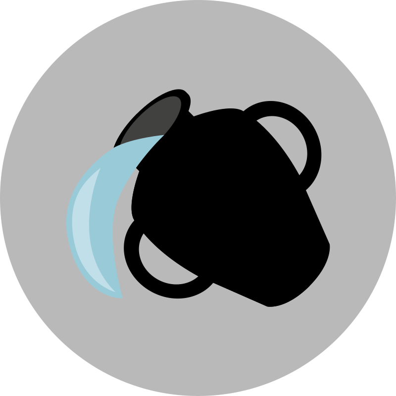
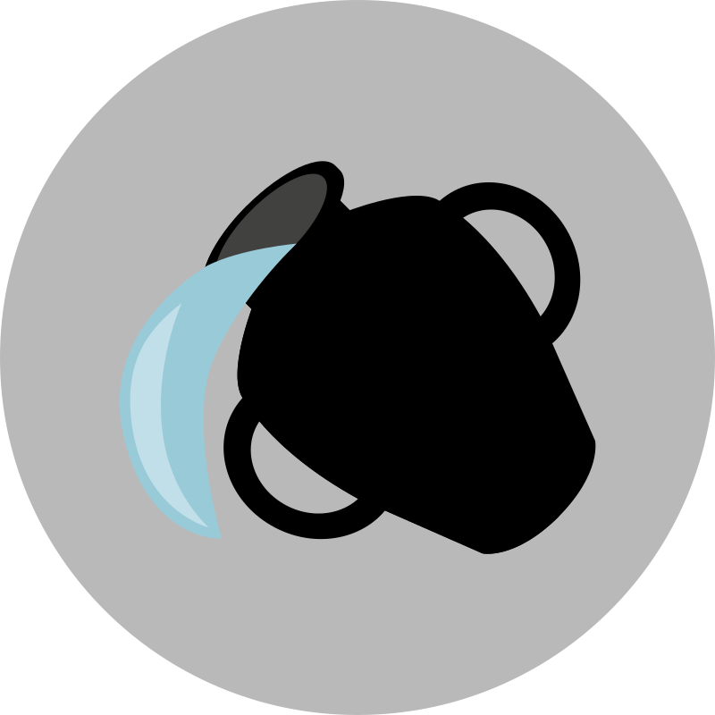
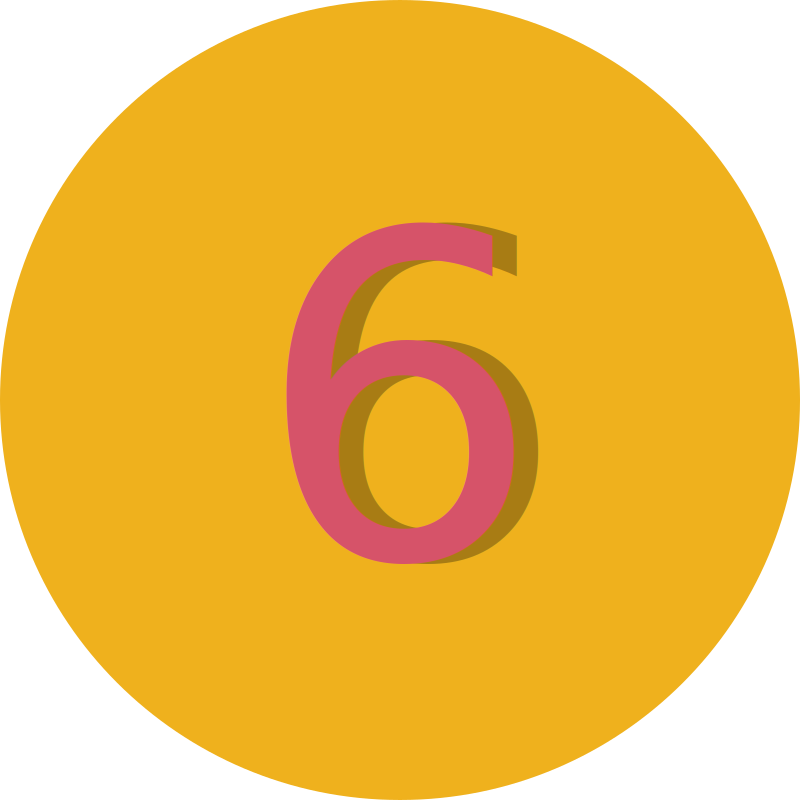
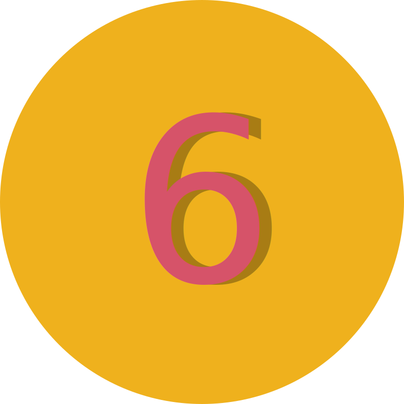
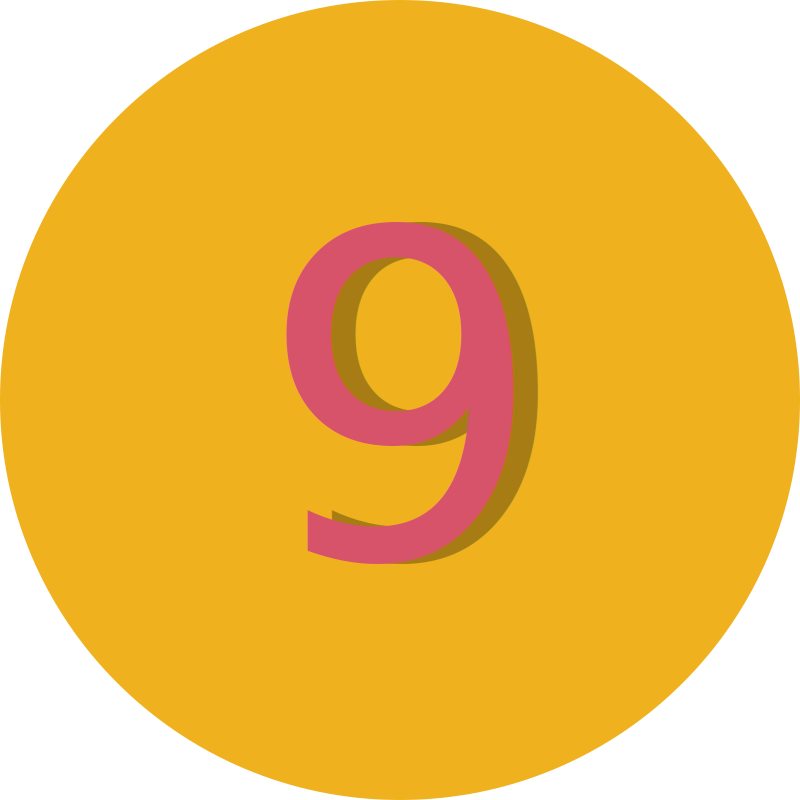
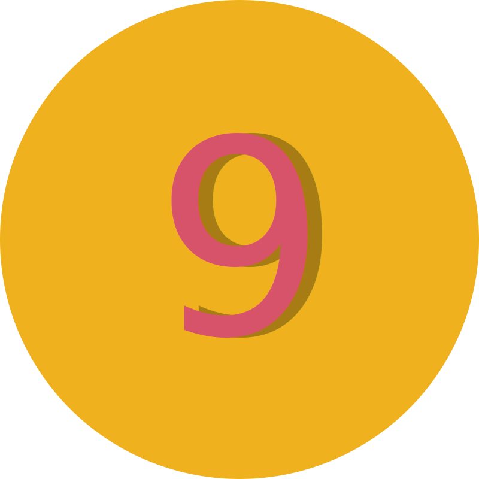

Lass die Sorgen los und tauche in die Welt der Astrologie ein.
Erstelle dein persönliches Horoskop, und du wirst vieles über dich selbst besser verstehen. Bei Fragen kannst du dich gerne an einen erfahrenen Astrologen wenden, frag mich zum Beispiel.
dein persönliches Horoskop
Merkmale der Nakshatra Revati
Nakshatra Revati (die 27. von 27 Nakshatras, 16°40′ – 30°00′ in den Fischen).
„Menschen mit dem Mond in Revati haben einen perfekten Körper, sanfte Manieren, tiefes Wissen, Wohlstand und kein Verlangen, fremdes Eigentum zu begehren.“ – Varahamihira
Eigenschaften der Nakshatra Revati
Zodiak
16°40′ – 30°00′ in den Fischen
Regentenplanet
Merkur
Symbol
Fisch, Trommel
Gottheit
Pushan
Varna/Kaste
Shudras
Ziel
Moksha (Erlösung)
Ursprung
Göttlich
Temperament
Sanft, weich (Mridu)
Guna
Sattva
Geschlecht
Weiblich
Qualität
Weich
Ayurvedische Konstitution
Kapha
Element
Äther
Richtung
Norden, Nordosten
Körperteile
Bauchhöhle, Leiste, Knöchel, Füße
Tier
Elefantenkuh
Laute
De, Do, Cha, Chi
Feind
Magha
Schlüsselkonzept der Nakshatra Revati
Der Nutzen, der aus der Unterstützung anderer gezogen wird. Durch den Dienst an anderen werden die Schwierigkeiten des Lebens verringert und das Wohlbefinden gesteigert.
„Revati“ bedeutet einfach „reich“. Eine andere Übersetzung ist „über die Grenzen hinausgehen“, was besser zur letzten Nakshatra passt.
Die Gottheit von Revati ist der sanfte und fürsorgliche Pushan, der Wohlstand schenkt und für den Abschluss von Angelegenheiten verantwortlich ist. Er ähnelt in vielerlei Hinsicht Surya und wird oft am Beginn von Wegen und Unternehmungen dargestellt. Er erleuchtet alle Straßen und ist daher als Gottheit für sichere Reisen beliebt. Somit ist Revati mit allen Arten von Reisen verbunden: physisch, mental, emotional, astral und kausal.
Die Aktivitäten von Revati lassen sich mit Begriffen wie „träumerisch“, „ehrfurchtsvoll“, „drehend“, „lautes Vergnügen“ und „entschlossen“ beschreiben. Es ist eine der angenehmsten, wohlwollendsten und glücklichsten Nakshatras, die alles im positiven Licht sieht. Menschen, die unter Revati geboren sind, sind ewige Optimisten, die selbst in schwierigen Zeiten ruhig bleiben und fest an die göttliche Vorsehung glauben.
Viele unter Revati Geborene neigen dazu, sich auf ihre eigenen Meinungen zu verlassen, die nicht immer mit der Realität übereinstimmen. Um Revati zu erden und realistischer zu machen, braucht es einen gewissen Einfluss von Saturn. Zum Beispiel wird eine Person mit Jupiter in dieser Nakshatra und Saturn-Aspekt die Vorteile dieser Nakshatra aktiv nutzen, während eine andere Person ohne diesen Aspekt eher dazu neigt, in Träumen zu verweilen.
Da Revati eine Nakshatra der Träumer ist, können ihre Einflüsse ganze Welten um sich herum erschaffen. Revati ist stark mit Maya (Illusion) verbunden. Die beste Lebensweise für Revati ist, die Welt so zu sehen, wie sie wirklich ist.
Revati-Geborene unterstützen andere und erhalten ihrerseits Unterstützung, besonders in schwierigen Momenten. Sie repräsentiert den höchsten Grad an Zivilisation und Kultiviertheit. Diese Menschen werden oft in reichen, aristokratischen Familien geboren und genießen ein glückliches Leben mit guter Erziehung und Ausbildung, sofern keine negativen Einflüsse vorhanden sind.
Revati wird für ihre Feinfühligkeit, Freundlichkeit und Liebe zu Tieren geschätzt. Sie wächst schnell, hat kreative Fähigkeiten, ist großzügig und sensibel. Sie neigt jedoch dazu, sich emotional oder physisch zu überlasten, indem sie zu viel von sich gibt, oft den falschen Menschen.
Revati liebt es, ihre Botschaft durch Sprache und andere Formen der Kommunikation zu verbreiten. Ihre charismatische und bezaubernde Persönlichkeit zieht andere in ihren Bann. Diese Nakshatra ist tief verbunden mit der Unendlichkeit von Zeit und Raum und hat die Fähigkeit, die Energien anderer Nakshatras zu imitieren und zu verstehen.
Die sanfte und loyale Natur von Revati zeigt sich auch in ihrer Fähigkeit, Enttäuschungen zu überwinden, die durch ihre übermäßige Großzügigkeit entstehen. Leben in der Nähe von Wasser tut Revati-Geborenen besonders gut.
Mystik der Sterne
Die Geheimnisse des Zodiaks
Padas (Viertel) der Nakshatra Revati
Erste Pada (16°40′ – 20°00′ in den Fischen)
Diese Pada fällt in die Navamsa des Schützen, die von Jupiter regiert wird. Sie ist mit Glück, Optimismus und der wohltätigen Seite von Revati verbunden. Menschen dieser Pada neigen dazu, sich leidenschaftlich einer Sache oder Überzeugung hinzugeben, weshalb es wichtig ist, dass sie die richtigen Interessen wählen. Diese Menschen sind intelligent, fröhlich, gebildet, liebevoll und verfügen über ein stabiles Einkommen.
Zweite Pada (20°00′ – 23°20′ in den Fischen)
Diese Pada fällt in die Navamsa des Steinbocks, die von Saturn regiert wird. Sie verleiht Praktikabilität und Organisationstalent. Sie ist eng mit zeitbezogenen Wissenschaften wie der Astrologie verbunden. Wohltätige Planeten fördern hier das Gleichgewicht, während malefische Planeten übermäßigen Ehrgeiz bewirken können. Diese Pada ist die realistischste von Revati und weniger anfällig für blinden Glauben.
Dritte Pada (23°20′ – 26°40′ in den Fischen)
Diese Pada fällt in die Navamsa des Wassermanns, die von Saturn regiert wird. Sie ist mit den bohemischen und humanistischen Aspekten von Revati verbunden. Menschen dieser Pada haben oft Schwierigkeiten, sich auf der materiellen Ebene auszudrücken.
Vierte Pada (26°40′ – 30°00′ in den Fischen)
Diese Pada fällt in die Navamsa der Fische, die von Jupiter regiert wird. Sie repräsentiert den ewigen Träumer. Diese Pada liefert nur gute Ergebnisse, wenn sie von malefischen Planeten wie Mars oder Saturn besetzt ist. Menschen dieser Pada sind leicht beeinflussbar und lassen sich oft von anderen dominieren.
Einfluss der Aspekte auf den Mond in der Nakshatra Revati
Aspektierender Planet
Einfluss
Sonne
Ruhm und Reichtum.
Mars
Arbeit im Verteidigungsbereich oder anderen Sicherheitsbereichen.
Merkur
Der Horoskopeigner ist eine anziehende Persönlichkeit und könnte ein guter Astrologe werden. Mit dem Aspekt von Jupiter wird eine hohe soziale Stellung erreicht.
Venus
Religiosität, Wohlstand und Freude durch Kinder.
Saturn
Neigung zur Grausamkeit.
Aspekte des Mondes in der Nakshatra Revati
Mond in der 1. Pada (16°40′ – 20°00′ in den Fischen)
Der Horoskopeigner ist intelligent, fröhlich, gebildet und liebevoll. Er wird ein konstantes Einkommen haben.
Mond in der 2. Pada (20°00′ – 23°20′ in den Fischen)
Wenn der Aszendent zusammen mit der Sonne oder Saturn hier liegt und Mars sich in Hasta befindet, kann dies zu einem tödlichen Autounfall führen.
Mond in der 3. Pada (23°20′ – 26°40′ in den Fischen)
Vorhersagen sollten erst nach dem ersten Lebensjahr gemacht werden, da ein Risiko für den Tod vor dem ersten Geburtstag besteht. Armut und sündhaftes Verhalten sind möglich.
Mond in der 4. Pada (26°40′ – 30°00′ in den Fischen)
Bei Männern kann diese Mondposition den Tod des Vaters bringen, während es bei Frauen den Tod der Mutter bewirken kann, sofern keine wohltätigen Aspekte dies neutralisieren. Diese Position verleiht Wahrhaftigkeit, Mut, Tapferkeit und Intelligenz.
Aspekte der Sonne in der Nakshatra Revati
Sonne im Bereich von 16°40′ – 20°00′ in den Fischen (Geburt vom 30. März bis 2. April)
Dieses Sonnenposition verleiht Popularität, Reichtum, Intelligenz, Weisheit, Schönheit, eine gute Bildung und Tapferkeit.
Sonne im Bereich von 20°00′ – 23°20′ in den Fischen (Geburt vom 3. April bis 6. April)
Wenn sowohl die Sonne als auch der Mond in diesem Bereich liegen und der Aszendent in Dhanishta fällt, können im frühen Lebensalter Krankheiten auftreten.
Sonne im Bereich von 23°20′ – 26°40′ in den Fischen (Geburt vom 6. April bis 10. April)
Wenn die Person bei Sonnenaufgang geboren wird, Venus in Rohini und der Mond in Chitra steht, besteht die Gefahr, dass diese Person von der eigenen Ehefrau im eigenen Haus getötet wird.
Sonne im Bereich von 26°40′ – 0°00′ im Widder (Geburt vom 10. April bis 14. April)
Dies ist die beste Position für die Sonne. Wenn Jupiter einen Aspekt auf die Sonne hat, erreicht die Person eine sehr hohe gesellschaftliche Stellung. Das 44. Lebensjahr gilt als das erfolgreichste Jahr.
Einfluss der Aspekte auf die Sonne in der Nakshatra Revati
Aspektierender Planet
Einfluss
Mond
Angenehme Manieren, Redekunst. Der Horoskopeigner wird einen guten Sohn haben.
Mars
Probleme mit Verwandten, Arbeit im Verteidigungsbereich oder bei der Polizei.
Merkur
Reichtum. Der Horoskopeigner könnte Edelmetalle sammeln und Kenntnisse über heilige Schriften besitzen.
Jupiter
Hohe soziale Stellung.
Venus
Neigung zu sinnlichen Vergnügungen.
Saturn
Neigung zu schlechter Gesellschaft.
Einfluss der Sonne in den Vierteln der Nakshatra Mula
Viertel
Gradbereich
Einfluss
Erste Pada
00°00′ – 03°20′ des Schützen (Geburt zwischen dem 15. und 18. Dezember)
Die Eltern des Horoskopeigners werden sich in Wohltätigkeit engagieren.
Zweite Pada
03°20′ – 06°40′ des Schützen (Geburt zwischen dem 18. und 21. Dezember)
Handel mit Tieren; wenn Venus aspektiert, auch mit Stoffen, Kleidung und Schmuck.
Dritte Pada
06°40′ – 10°00′ des Schützen (Geburt zwischen dem 21. und 24. Dezember)
Lebhafte Fantasie und Einfallsreichtum. Arbeit könnte mit Benzin oder Öl verbunden sein. Mögliche Halskrankheiten.
Vierte Pada
10°00′ – 13°20′ des Schützen (Geburt zwischen dem 25. und 28. Dezember)
Ungünstig für die Gesundheit: Anämie, Migräne. Könnten als Ärzte tätig sein.
Einfluss der Aspekte auf Mars in der Nakshatra Revati
Aspektierender Planet
Einfluss
Sonne
Glück, Bekanntheit und eine Neigung zur Grausamkeit.
Mond
Gute Bildung, jedoch möglicherweise gesundheitliche Probleme oder ein körperliches Handicap. Der Horoskopeigner könnte auch Verbindungen zu kriminellen Kreisen haben.
Merkur
Gute Bildung, Neigung und Interesse an Kunst.
Jupiter
Wohlstand, komfortables Leben, jedoch Unglück in der Ehe.
Venus
Neigung zu Wohltätigkeit, aber nicht immer selbstlos.
Saturn
Viele Reisen und möglicherweise ein körperliches Handicap.
Mars in der Nakshatra Revati
Mars in der 1. Pada (16°40′ – 20°00′ in den Fischen)
Der Horoskopeigner wird finanzielle Gewinne durch Grundbesitz erzielen. Er zeichnet sich durch ausgezeichnete Gesundheit und Aktivität aus.
Mars in der 2. Pada (20°00′ – 23°20′ in den Fischen)
Der Horoskopeigner wird entweder ein Betrüger sein oder selbst betrogen werden. Er wird übermäßig reizbar sein und Konflikte um sich herum säen. Mögliche mentale oder nervöse Störungen, einschließlich Epilepsie.
Mars in der 3. Pada (23°20′ – 26°40′ in den Fischen)
Wenn Mars in dieser Pada mit Jupiter verbunden ist, wird der Horoskopeigner in der Lage sein, alles zu erreichen, was er sich wünscht. Er wird eine Führungsposition in seinem Arbeitsbereich einnehmen, doch seine Beziehungen zu Untergebenen werden ihm viele Probleme bereiten.
Mars in der 4. Pada (26°40′ – 30°00′ in den Fischen)
Diese Pada ist die Exaltation der Venus, und die Platzierung von Mars hier bringt Reichtum und Ruhm. Allerdings wird das Familienleben des Horoskopeigners schwierig sein, mit möglichen Scheidungen oder längeren Trennungen.
Einfluss der Aspekte auf Merkur in der Nakshatra Revati
Aspektierender Planet
Einfluss
Sonne
Ruhiger Charakter. Mögliche Erkrankungen der Harnwege.
Mond
Freundlichkeit, Zuverlässigkeit in Freundschaften und literarisches Talent.
Mars
Der Horoskopeigner könnte als Schriftsteller Geld verdienen, aber seine Werke werden der Gesellschaft keinen Nutzen bringen.
Jupiter
Attraktive Charakterzüge und Edelmut. Möglicher hoher politischer Status.
Venus
Redekunst und pädagogische Fähigkeiten.
Saturn
List, Grausamkeit und Unglück.
Merkur in der Nakshatra Revati
Merkur in der 1. Pada (16°40′ – 20°00′ in den Fischen)
Der Horoskopeigner zeichnet sich durch Schlagfertigkeit, Besonnenheit, eine Liebe zum Risiko und eine Neigung zum Sprachenlernen aus.
Merkur in der 2. Pada (20°00′ – 23°20′ in den Fischen)
Wenn Jupiter Merkur aspektiert, hat der Horoskopeigner einen nüchternen und berechnenden Verstand. Er wird umsichtig, weise und philosophisch sein. Er kann als Schriftsteller oder Journalist brillieren.
Merkur in der 3. Pada (23°20′ – 26°40′ in den Fischen)
Diese Position verleiht List und Verschlagenheit. Der Horoskopeigner könnte ein hochqualifizierter Jurist werden. Reichtum wird durch den Ehepartner kommen, jedoch kann alles bei einer Scheidung vor Gericht verloren gehen. Wenn zwei oder mehr malefische Planeten Merkur in dieser Pada aspektieren oder sich mit ihm verbinden, könnte der Mann im Horoskop der Grund für den Tod seiner Ehefrau sein.
Merkur in der 4. Pada (26°40′ – 30°00′ in den Fischen)
Der Horoskopeigner könnte im Regierungsdienst arbeiten. Wenn Merkur mit Mars verbunden ist, wird der Beruf mit Technik in Zusammenhang stehen. Wenn mit Venus, wird es viele Auslandsreisen geben. Wenn mit Jupiter, ist eine hohe Position in der Regierung und eine politische Karriere vorhergesagt.
Einfluss der Aspekte auf Jupiter in der Nakshatra Revati
Aspektierender Planet
Einfluss
Sonne
Armut und mangelnde Beliebtheit bei anderen.
Mond
Glück im Familienleben, Reichtum und Wohlstand.
Mars
Grausamkeit. Der Horoskopeigner wird stets Probleme für andere verursachen.
Merkur
Hohes soziales Ansehen.
Venus
Glück und ein langes Leben.
Saturn
Neigung zum Diebstahl.
Jupiter in der Nakshatra Revati
Jupiter in der 1. Pada (16°40′ – 20°00′ in den Fischen)
Dieses Jupiter-Position verleiht Hingabe, hohe moralische Werte und berufliche Erfolge. Der Horoskopeigner neigt zu Fülle und kann eine massige, schwere Statur haben. Wenn Jupiter in diesem Bereich im Horoskop einer Frau steht und der Aszendent auf die 2. Pada von Anuradha fällt, wird sie mehrere Söhne haben.
Jupiter in der 2. Pada (20°00′ – 23°20′ in den Fischen)
Wenn der Aszendent auf Mula oder Purvashada fällt und Jupiter in dieser Pada von Revati steht, wird der Horoskopeigner von allen Übeln geschützt sein. Er wird außergewöhnlich glücklich sein und ein langes, fruchtbares Leben führen.
Jupiter in der 3. Pada (23°20′ – 26°40′ in den Fischen)
Dieses Jupiter-Position verleiht Religiosität, Geselligkeit, schriftstellerische Fähigkeiten und Interesse an Mystik. Der Horoskopeigner wird viel reisen oder im Ausland leben. Mögliche gesundheitliche Probleme umfassen Lebererkrankungen, Gefäßverstopfungen und eine Anfälligkeit für Erkältungskrankheiten.
Jupiter in der 4. Pada (26°40′ – 30°00′ in den Fischen)
Alte Texte beschreiben diese Position von Jupiter zusammen mit dem Mond in Hasta wie folgt: „Der Horoskopeigner wird schön sein und eine rötliche Gesichtsfarbe haben. Auf seinen Handflächen und Fußsohlen werden besondere Zeichen wie ein Dreizack, ein Fisch oder ein Pfeil zu sehen sein. Er wird Städte und Staaten regieren, 100 Jahre leben und seinen Tod im Wald finden.“ Diese Zeichen weisen auf eine herausragende Persönlichkeit, großes Glück und außergewöhnliche Fähigkeiten hin.
Nach der spirituellen Lebensordnung der vedischen Gesellschaft nimmt der Mensch am Ende seines Lebens einen entsagten Lebensstil (Sannyasa) an. Er verlässt sein Zuhause, geht auf Pilgerreise zu heiligen Stätten oder lebt als Einsiedler im Wald und vertieft sich in Meditation. Die letzte Aussage der alten Texte weist auf die Abkehr von sozialen Aktivitäten und die Hinwendung zu spirituellen Werten hin.
Venus in der 1. Pada (16°40′ – 20°00′ in den Fischen)
Wenn der Aszendent im weiblichen Horoskop auf die 1. Pada von Chitra fällt und Venus in der 1. Pada von Revati steht, wird die Horoskopeignerin außergewöhnlich schön sein, von ihrem Ehemann geliebt werden und eine Zierde für ihre Familie sein.
Venus in der 2. Pada (20°00′ – 23°20′ in den Fischen)
Im weiblichen Horoskop steht Venus in Revati für Schönheit, Weiblichkeit und einen bezaubernden Magnetismus sowie für eine Neigung zu den schönen Künsten. Wenn Venus in der 2. Pada steht und der Aszendent auf Hasta fällt, wird der Ehemann der Horoskopeignerin sehr berühmt sein und möglicherweise mit dem Militär oder den Streitkräften verbunden sein. Diese Position zeigt auch Wohlstand und den Besitz prächtiger Juwelen an.
Venus in der 3. Pada (23°20′ – 26°40′ in den Fischen)
Wenn der Mond sich in dieser Pada mit Venus verbindet und der Aszendent in Anuradha liegt, wird die Horoskopeignerin ihr Glück mehr durch Töchter als durch Söhne finden.
Venus in der 4. Pada (26°40′ – 30°00′ in den Fischen)
Eine Person mit Venus in dieser Pada wird bis zu 70 Jahre alt. Wenn Venus sich in dieser Pada mit Jupiter verbindet und der Mond in der 2. Pada von Krittika steht, kann der Horoskopeigner ein hochrangiger Politiker oder Minister werden. Alte Texte beschreiben diese planetarische Konstellation poetisch und betonen die Macht des Horoskopeigners: „Der Staub der marschierenden Armee wird die Sonne verdunkeln, und die Lotusblumen werden ihre Blätter wie am Abend schließen.“
Einfluss der Aspekte auf Saturn in der Nakshatra Revati
Aspektierender Planet
Einfluss
Sonne
Dieser Aspekt ist günstiger als andere Kombinationen von Sonne und Saturn in Nakshatras und bringt Ruhm und Reichtum.
Mond
Glückliches Familienleben, aber ein Kind mit dieser Konstellation kann eine Gesundheitsgefahr für die Mutter darstellen.
Mars
List, Grausamkeit, fehlende Beliebtheit und kriminelle Neigungen.
Merkur
Hohes soziales Ansehen und ein untadeliger Ruf.
Jupiter
Der Horoskopeigner könnte Wissenschaftler oder Dozent werden und sich mit Forschung beschäftigen.
Venus
Der Horoskopeigner wird von einer Frau erzogen, die nicht seine Mutter ist.
Saturn in der Nakshatra Revati
Saturn in der 1. Pada (16°40′ – 20°00′ in den Fischen)
Ein einzelner Saturn in dieser Pada oder ein Saturn, der von einer wohltätigen Planetenenergie aspektiert wird, bringt Reichtum und Glück für den Horoskopeigner. Wenn der Aszendent in Hasta liegt, verzögert sich die Ehe, und der Ehepartner wird älter als der Horoskopeigner sein. Befindet sich Saturn im 7. Haus und beeinflusst das 1. Haus, so wird der Horoskopeigner pessimistisch und unfähig sein, sich an andere Menschen und wechselnde Umstände anzupassen.
Saturn in der 2. Pada (20°00′ – 23°20′ in den Fischen)
Energisch, praktisch und nachdenklich. Der Horoskopeigner wird Interesse an Geologie, Mineralogie und Mathematik haben.
Saturn in der 3. Pada (23°20′ – 26°40′ in den Fischen)
Der Horoskopeigner wird seinen Lebensunterhalt als Reisebüroagent, im Transportwesen oder in der Film- und Unterhaltungsindustrie verdienen.
Saturn in der 4. Pada (26°40′ – 30°00′ in den Fischen)
Eine gute Erinnerung und ein methodischer Ansatz zeichnen diese Position aus. Der Horoskopeigner wird durch den Verkauf von Luxusgütern, Schmuck oder Gemälden Geld verdienen. Er könnte auch in der Musikbranche tätig sein oder für Radio und Fernsehen arbeiten. Sein Leben wird jedoch stets von einem Hindernis begleitet, das ihn daran hindert, seine Arbeit perfekt auszuführen.
Mystik der Sterne
Die Geheimnisse des Zodiaks
Funktioniert Prashna-Horoskop wirklich?
Absolut! Jede Frage, die gestellt wird, hat eine tiefere kosmische Bedeutung. Im Moment der Fragestellung sind die Planeten so positioniert, dass sie genau das widerspiegeln, was gerade gebraucht wird. Prashna nutzt diese Synchronizität, um eine klare Antwort zu geben – es ist, als würde das Universum direkt sprechen.
Wie genau sind die Antworten?
Die Genauigkeit ist oft verblüffend! Die erstellte Karte zeigt genau die Energien, die umgeben und die aktuelle Situation beeinflussen. Viele Menschen sind überrascht, wie direkt Prashna den Kern ihrer Fragen trifft – ob es um Liebe, Beruf oder persönliche Entscheidungen geht.
Braucht man das Geburtshoroskop dafür?
Nein, für Prashna braucht es keine Geburtsdaten. Alles, was zählt, ist der Moment der Frage. Dieser Moment enthält bereits alle Antworten, um Klarheit zu schaffen. Natürlich kann das Geburtshoroskop zusätzliche Einblicke geben, aber Prashna ist perfekt für den aktuellen Moment und gibt präzise Antworten ohne Geburtsinformationen.
Kann man es einfach ausprobieren?
Natürlich! Selbst wenn die Frage "einfach so" gestellt wird, gibt es immer einen tieferen Grund dafür. Wenn die Frage auftaucht, ist es genau der richtige Moment, sie zu stellen. Prashna zeigt, was der Kosmos im Augenblick bereit hat – die Antwort könnte überraschen!
Prashna
Deine persönliche Frage
Nutzen der Prashna-Astrologie
Schnelle Einsicht
Antworten im Moment
Sofort verfügbar
Prashna-Astrologie ist eine vedische Methode, die das Stellen von Fragen und das Erhalten präziser Antworten anhand der Planetenkonstellationen zum Zeitpunkt der Frage ermöglicht.
Analyse der Prashna-Astrologie
Deutung des Aszendenten
Präzise Analyse
In der Prashna-Astrologie wird der Aszendent (Lagna) analysiert, um den Verlauf einer Situation zu verstehen. Der Lagnesh, also der Herrscher des Aszendenten, liefert durch seine Stellung im Zeichen und im Haus wichtige Hinweise auf den Ausgang der Frage. Aspekte anderer Planeten und ihre Einflüsse auf den Lagnesh ermöglichen es dem Astrologen, präzise Vorhersagen zu treffen und fundierte Schlussfolgerungen zu ziehen.
Grundlagen der Prashna-Astrologie
Astrologische Software
Präzise Berechnung der Prashna
Jetzt ausprobieren
Vor dir steht eine astrologische Software, die es ermöglicht, Prashna-Astrologie völlig präzise zu berechnen. Du kannst dich selbst ausprobieren und sehen, wie großartig diese Methode ist, indem du Fragen stellst und ihre Genauigkeit überprüfst.
Aspekte und Häuser
Wichtige Planetenaspekte
Genauer Einblick
Die Aspekte der Planeten auf den Lagnesh sowie ihre Position in den Häusern liefern tiefgehende Einsichten in die Natur der Frage. Diese Analyse zeigt, welche planetarischen Energien die Situation unterstützen oder behindern. Der Zustand des Lagnesh, seine Würde und die Aspekte, die auf ihn einwirken, sind entscheidend für das Verständnis der Fragestellung.
Janma Patrika
Hauptbestandteile - Geburtsdetails
Erstellung
Panchang
detaillierte Informationen
astrologischer Almanach
Ein Panchang ist ein wichtiger astrologischer Kalender in der vedischen Astrologie, der detaillierte Informationen über astronomische und astrologische Aspekte eines bestimmten Tages liefert.
Insgesamt ist der Panchang ein komplexes und vielseitiges Instrument, das tief in der indischen Kultur und Astrologie verwurzelt ist und auch heute noch von vielen Menschen für die Planung und Orientierung im Alltag genutzt wird.
Lagna-Diagramm
Aszendent-Diagramm
Interpretation
Das Lagna und seine Position in einem bestimmten Rashi (Tierkreiszeichen) und Nakshatra (Mondhaus) geben Aufschluss über verschiedene Aspekte des Lebens
Der Lagna-Herrscher (der Planet, der das Zeichen des Aszendenten regiert) spielt ebenfalls eine wichtige Rolle in der Interpretation
Es dient als Grundlage für die Erstellung anderer wichtiger Diagramme wie das Navamsa-Diagramm.
Entwicklung
Rasi Diagramm
Janma Rashi / Geburts-Rashi
Definition und Bedeutung
Das Rasi-Diagramm zeigt die Position der Planeten in den zwölf Tierkreiszeichen (Rashis) zum Zeitpunkt der Geburt.
Es wird auch als Mond-Diagramm bezeichnet, da es auf der Position des Mondes basiert.
Die Positionen der Planeten in den verschiedenen Häusern und ihre Beziehungen zueinander werden analysiert.
Besondere Aufmerksamkeit gilt dem Haus, in dem sich der Mond befindet, da es als Geburts-Rashi gilt.
Navamsa Diagramm
D9-Diagramm
spiritueller Entwicklung
Das Navamsa-Diagramm wird oft als "Frucht" des Geburtshoroskops bezeichnet.
Es gibt Aufschluss über die Qualität und Stärke der Planetenpositionen im Geburtshoroskop.
Besonders wichtig ist es für die Analyse von Ehe und Partnerschaft.
Es wird auch zur Beurteilung der spirituellen Entwicklung und des Karmas einer Person herangezogen.
Kontakt aufnehmen
Ich freue mich, von dir zu hören. Ob du eine Frage zur Astrologie hast oder Hilfe brauchst, um die Ergebnisse deines Horoskops besser zu verstehen – schreib mir.


 



 


 
